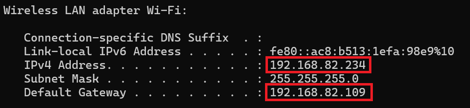

GUIDE
If you want to scan ports of other than your network,
please take PERMISSION from the network owner. If you are trying to
scan ports of your own network, follow the following steps!
- First of all, you have to know the IP address of your network.
Type ipconfig command in Termnial to check your IP address.

In the above picture, boxed addresses are IPv4 addresses. You will also find similar
addresses upon running the command in your Termnial.
- Take note of the IP Address.
- Head to the tool and enter the IP Address. You will see the result of
mentioned ports on the right box.